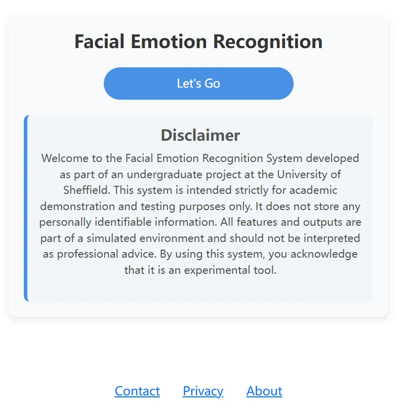
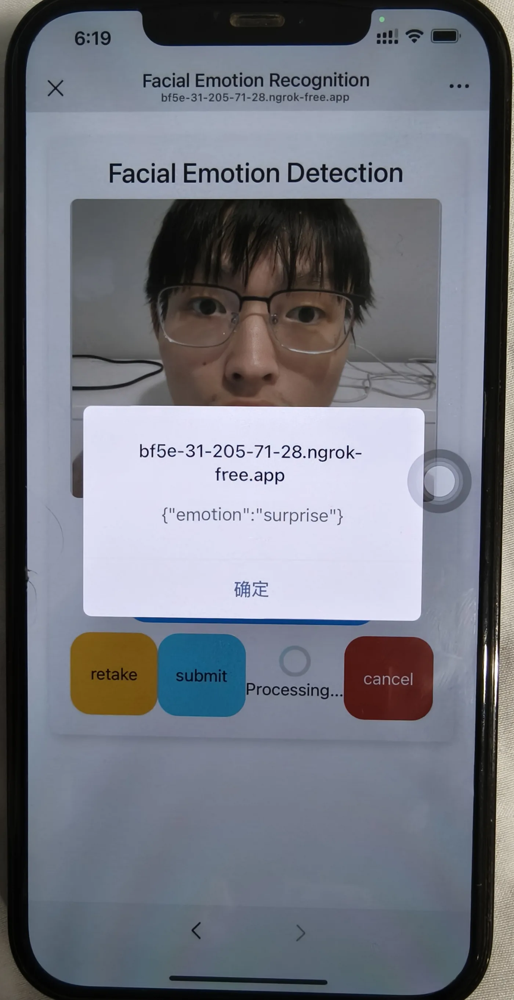

问题定义
设计一个可运行系统：用户提交面部图像，应用验证并预处理图像，训练模型估计表情类别，再通过清晰界面返回结果。
一个端到端实验性 Web 系统，将响应式界面、Java/Tomcat 应用逻辑和 Python 深度学习流程组合用于面部表情分类。


设计一个可运行系统：用户提交面部图像，应用验证并预处理图像，训练模型估计表情类别，再通过清晰界面返回结果。
完成文献综述、需求分析、系统架构、前端和服务端实现、模型集成、测试、结果分析、隐私考虑和最终技术报告。
报告描述了 Java/Tomcat Web 应用与 Python/PyTorch 流程，并使用预训练 Swin Transformer；讨论的数据来源包括 FER2013、RAF-DB 和合成增强数据。
最终报告记录的总体准确率为 76.25%。该数字仅作为报告中的结果展示，本站构建过程中没有独立复现实验。
最有力的证据是完整的端到端工作流以及对测试和限制的明确分析，而不是把面部表情等同于人的真实内在情绪。
功能与非功能需求、架构、异常处理、响应式界面、模型测试、混淆矩阵和类别级分析。
公开数据集在光照、姿态、人群构成、标注规则和采集环境上存在差异，限制了直接比较与现实泛化。
后续应优先考虑主体级划分、校准、多次重复实验、消融、外部测试，以及合成增强与真实留出数据的明确比较。
这是学术演示系统，不是诊断、心理判断或监控工具。真实部署必须明确处理图像同意、保留、偏差和不确定性。